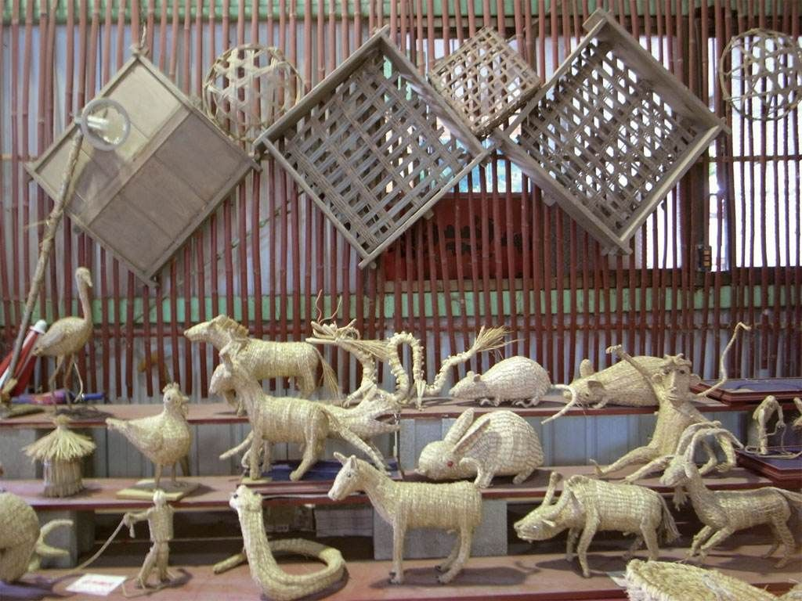

在长春净月高新区，隐匿着一座充满魅力的韩式草柳编博物馆，这里是省级非物质文化遗产代表性项目 “韩氏草编” 的展示传播基地，也是领略草柳编艺术魅力的绝佳去处。
步入博物馆，仿佛踏入了一个奇妙的草柳编世界。栩栩如生的 “小动物”，灵动活泼，似乎下一秒就要跳跃起来；独具创意的生活用品，将实用与艺术完美融合；还有那些以草柳编形式呈现的 “世界名画”，令人惊叹不已。这些精美的作品，皆出自韩氏草编第四代传承人之手。在他的巧手下，草根树皮、农作物叶脉等平凡的材料，摇身一变成为了艺术创作的宝贵资源，每一个作品都生动自然、惟妙惟肖。
韩氏草编历史悠久，传承发展近百年。上世纪初，第一代传承人韩永清随祖辈来到东北，在长春落脚后，便用东北当地的苞米叶、桦树皮、柳树条等材料编筐编篓叫卖，开启了韩氏草编的传承之路。第二代传承人韩国春继承父业，进一步发挥创意，编出了更多好看、好玩、好用的物件和装饰品。第三代传承人韩笑从中央工艺美院研修班结业后，为韩氏草编注入了新的活力，将美术技法、理论与草编传统工艺相结合，成功让韩氏草编从生活用具升级为工艺品、艺术品。
到了第四代传承人韩威壮，他不仅继承了前辈们的坚守精神，更勇于创新。他对草编材料进行严格的染色、熏蒸、脱毒等工艺处理，确保环保安全；在设计作品时，既保留了草编的质朴韵味，又融入了现代时尚元素，深受大众喜爱。2023 年，技艺精湛的第五代传承人闫莉在中华老字号论坛上代表吉林省参加展演展示，让韩氏草编技艺在更大的舞台上绽放光彩。
步入展馆深处，一幅以长白山原始森林为背景的乌拉草工艺画映入眼帘，这正是韩威壮先生将美术造诣与非遗技艺融合的匠心之作。他精选长白山腹地生长的乌拉草，这种经霜雪淬炼的柔韧草茎，需历经浸泡软化、消毒漂白、染色定型等二十余道工序，方能蜕变为艺术创作的载体。韩威壮运用独创的 “分层拼贴法”，将不同色泽的草片剪裁成纤毫毕现的叶片脉络，以深浅渐变的草色还原长白山四季流转，画面中蜿蜒的溪流用半透明草丝勾勒，在灯光下折射出粼粼波光，每一处细节都彰显着传统工艺与现代美学的完美碰撞。
在草编艺术展区，韩式草编的创新成果令人耳目一新。团队以传统草编技法为根基，结合 3D 建模技术，赋予草编小动物鲜活的生命力。蓬松的兔子草编采用螺旋式缠绕技法，草丝疏密有致地编织出绒毛质感，红宝石般的琉璃眼睛镶嵌其中，仿佛下一秒就会蹦跳着消失在草丛间；麋鹿造型的草编作品则运用立体编织工艺，鹿角部分用天然藤条与乌拉草交织，展现出原始森林的野性之美。这些作品不仅延续了乌拉草质朴的自然气息，更通过创意设计让非遗技艺走进现代生活，成为兼具实用价值与艺术收藏价值的文化符号。
2016 年，韩氏草编第四代传承人韩威壮被评为 “首届中国工美行业艺术大师”；2019 年，韩氏草编入选 “吉林省第四批省级非物质文化遗产代表性项目增补名录”；2020 年，吉林省韩氏草柳编博物馆被认定为省级非物质文化遗产 —— 韩氏草编展示传播基地；2022 年，韩威壮被评为 “中国工艺美术大师”；2025 年 1 月，韩氏草编项目代表吉林省非遗项目参与央视录制 “非遗春晚”。这一系列荣誉，见证了韩氏草编的辉煌发展。
长春韩式草柳编博物馆不仅是一个展示草柳编艺术的场所，更是传承和弘扬非遗文化的重要基地。在这里，你能深切感受到草柳编艺术的独特魅力，领略非遗传承人的匠心独运。如果你对传统手工艺感兴趣，不妨来这里一探究竟，相信你一定会被草柳编之美所折服。